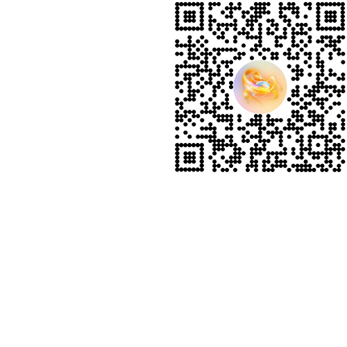
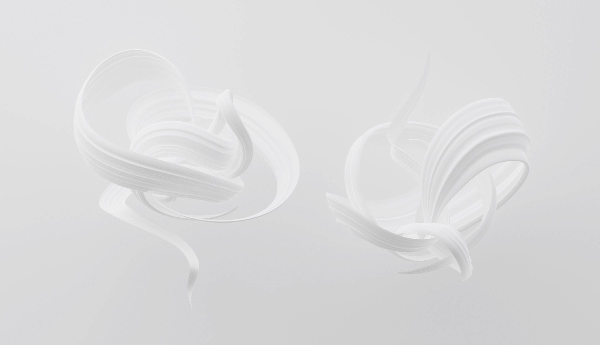
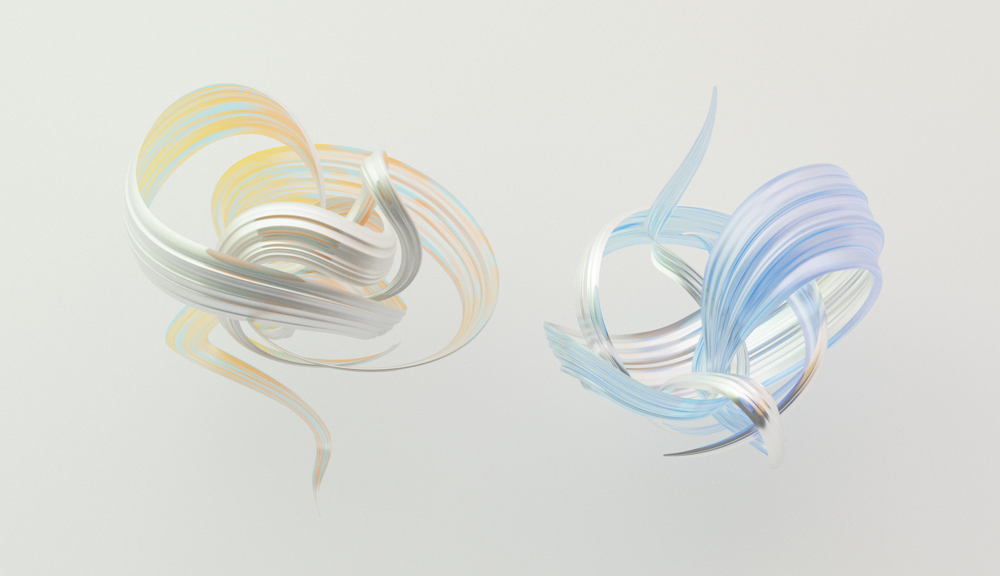

META / THE FLOW AT CANNES LIONS
AR (2022)
The Flow is an AR artifact developed in celebration of the Cannes Lions International Festival of Creativity 2022.
Inspired by the mutability of creativity and the impact of interpersonal engagement on our growth, The Flow features painterly swirls that evolve with time, reaching final form each day by 7pm and resetting at midnight. Through hand-tracking and time-reactivity, this project offers three stages of evolution alluding to the synergetic transformations that arise as we exchange ideas and knowledge with each other.
Production / Creative Shop @Meta
AR Design & Development / Helena Dong
3D Design / Helena Dong with Isabel Palumbo
⌓ Try The Flow
AR (2022)
The Flow is an AR artifact developed in celebration of the Cannes Lions International Festival of Creativity 2022.
Inspired by the mutability of creativity and the impact of interpersonal engagement on our growth, The Flow features painterly swirls that evolve with time, reaching final form each day by 7pm and resetting at midnight. Through hand-tracking and time-reactivity, this project offers three stages of evolution alluding to the synergetic transformations that arise as we exchange ideas and knowledge with each other.
Production / Creative Shop @Meta
AR Design & Development / Helena Dong
3D Design / Helena Dong with Isabel Palumbo
⌓ Try The Flow
When launched by one person and tracked to single hand, the default experience is that of a time-reactive artifact, growing in size throughout the day. The presence of a second hand—representing another entity—introduces a second artifact and immediately heightens the visibility of the orbs surrounding them. Lastly, moving the two hands closer past a certain threshold would initiate an interchange of orbs and accelerate the growth of both artifacts.
During the Cannes Lions Festival, this project could be accessed via a QR code on the back of every delegate's badge.
During the Cannes Lions Festival, this project could be accessed via a QR code on the back of every delegate's badge.

